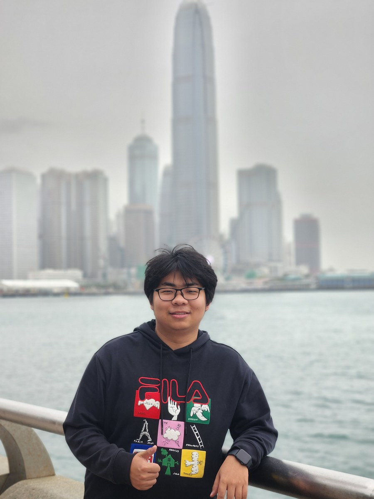

科研实习 · 中国科学院
显微成像中的粒子追踪
我参与了表面等离激元共振显微成像（SPRM）项目中的模型训练与误检分析，并开发了一款独立的 Windows 粒子轨迹分析工具，在 Windows 环境中进行了实际测试。
工具功能
桌面应用将数据预处理、模型推理、三维轨迹可视化和 CSV 导出整合到同一流程中。

科研实习、模型开发与软件工程
科研实习 · 中国科学院
我参与了表面等离激元共振显微成像（SPRM）项目中的模型训练与误检分析，并开发了一款独立的 Windows 粒子轨迹分析工具，在 Windows 环境中进行了实际测试。
桌面应用将数据预处理、模型推理、三维轨迹可视化和 CSV 导出整合到同一流程中。
实习 · Bksuns
我在实习中使用低秩适配（LoRA）微调大语言模型。这段经历让我更关注模型后训练，以及如何评估微调在具体任务上带来的变化。
毕业设计 · Rhema
我和团队开发了一个根据题目规格生成练习题的系统。我参与了网页配置流程的开发，让用户能调整已有规格中的参数，再生成练习单。
课程项目 · HMHN
我在团队课程项目中探索了如何融合音频和视频表征。我们按时间戳配对输入，再通过跨模态注意力学习两类特征之间的关系。
设计竞赛 · 计算机视觉
我负责视频采集，并与队友协作完成三维人体重建的数据预处理。团队调整了采集方案，改善了用于重建的视频输入质量。
我希望成为一名 AI 算法工程师，从事模型训练、后训练、算法优化与性能评估。